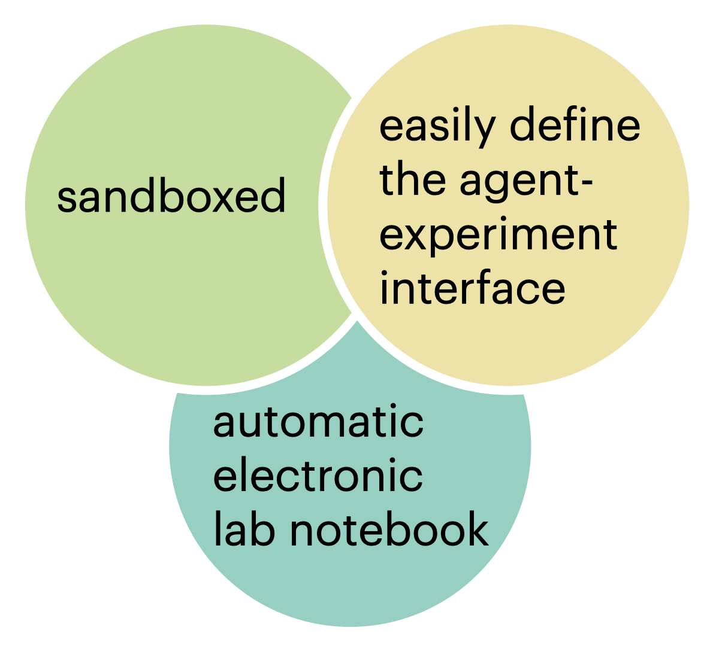
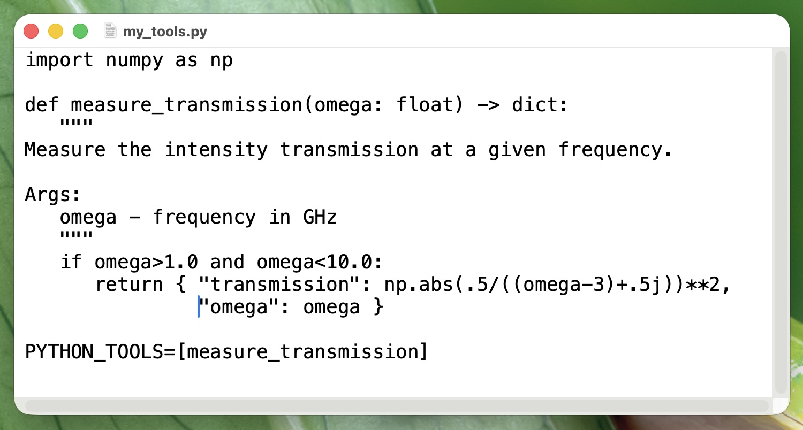
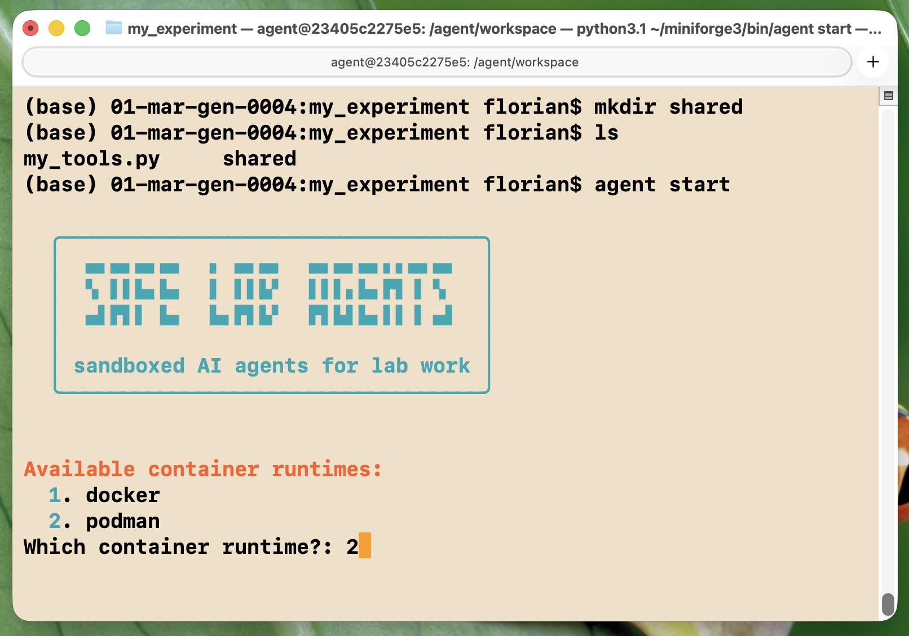
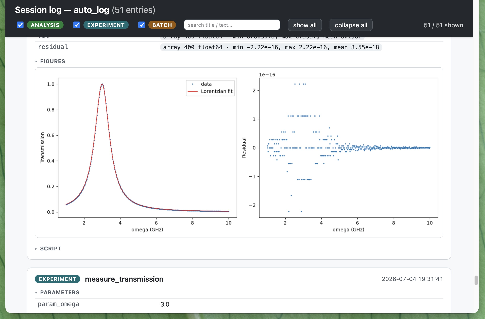

Safely run an AI agent inside a sandbox to control a scientific experiment or a numerical simulation. Define the interface to the experiment easily in a few lines. Automatically obtain electronic lab notebook documentation of the entire runs. Supports Claude Code and OpenClaw as agent frameworks.
By Maximilian Nägele and Florian Marquardt. Made at the Max Planck Institute for the Science of Light in Germany. Open source and forever free. First release July 2026.

Simply use pip install. Also needed: Docker or Podman (for the sandboxing) and an account/API key for Claude Code or Open Claw.
pip install safe-lab-agentsLook at an example setup.

agent start --task "Characterize this setup!"The setup wizard guides you through a few questions, installs everything needed inside the agent's sandbox, and launches the AI agent, here in autonomous mode.

Conveniently browse both the full AI agent exploration history, as well as all experimental data, analysis scripts, and resulting figures. Easy export as an electronic lab notebook (.eln) document.

Full conversation of the agent calibrating an experiment